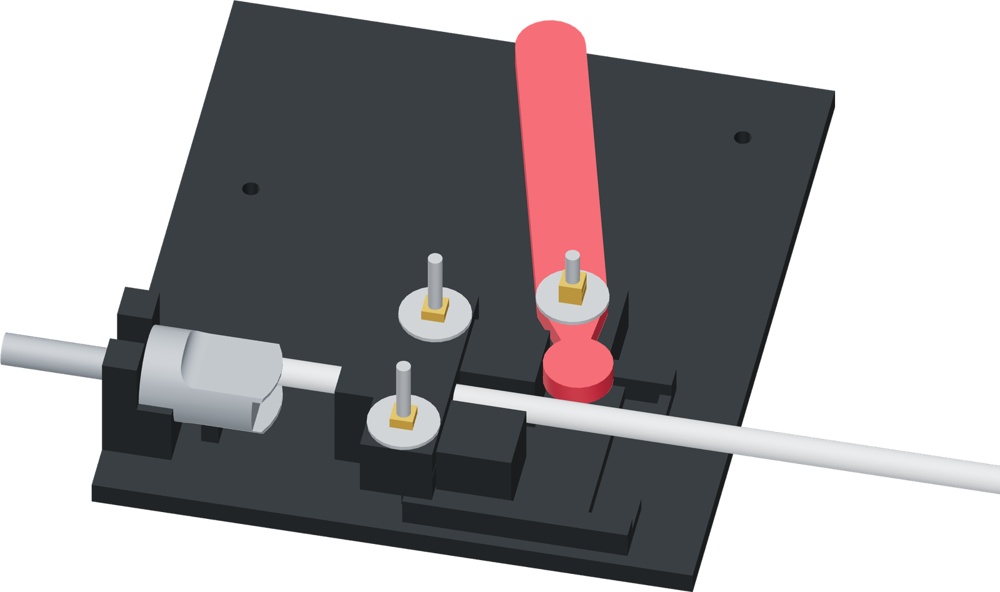

Move the press lever slowly
The short nose moves the guided ram; the long handle provides approximately 4:1 leverage. The faucet lever remains unpressed.

- Hold the fixed palm area with the opposite hand. Keep the donor's annular base face against the thrust wall.
- Move the long press lever slowly through the stroke. Watch the thimble enter straight and the grip remain at its mark.
- Stop when the port-lip witness reaches the mouth and the ram meets its travel stop. Do not force the lever beyond the stop.
- If the mark and stop disagree, or the tube slips or the sleeve folds, release the load and check the depth, marks, grip position and alignment.
A stop limits travel
The stop is a geometric overtravel limit. It does not prove full seating or load capacity. If the witness and stop disagree, recheck the setup instead of increasing force.